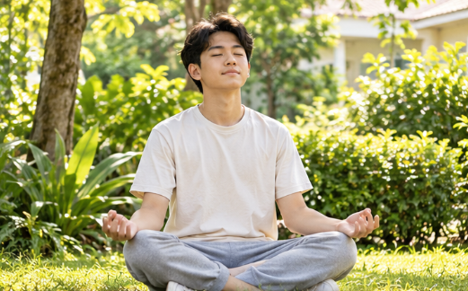

Sorotan Utama
Darurat Sunyi: Memahami Realitas Mental Health Generasi Muda
Berdasarkan data survei nasional, 1 dari 3 remaja Indonesia (34,9%) mengalami masalah kesehatan mental dalam setahun terakhir. Angka ini bukan sekadar statistik di atas kertas, melainkan cerminan nyata dari beban akademik, sosial, dan digital yang dipikul setiap hari.
Ironisnya, hanya sebagian kecil yang berani mencari pertolongan profesional. Stigma sosial yang menganggap remeh gangguan psikologis membuat banyak anak muda memilih memendamnya sendiri hingga berujung pada kelelahan mental (*burnout*).